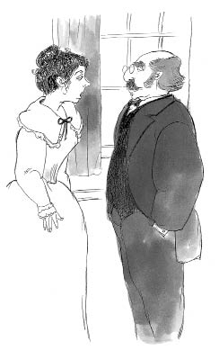

Bayan Rose, Oliver’ın başından geçenleri öğrenince onun suçsuz olduğuna karar verdi.
Bayan Rose, teyzesi Bayan Maylie, adı Losberne olan doktor ve bütün hizmetkârlar -hatta Giles bile- Oliver’a karşı çok iyi ve nazik davranıyorlardı.
Oliver bu kadar şanslı olduğu için onlara minnettardı, ama aynı zamanda Londra’ya geri dönüp Bay Brownlow’u bulmayı her şeyden daha çok istiyordu.
Dr. Losberne, Oliver’ı kendi arabasıyla Londra’ya götürmeyi teklif etti. Bay Brownlow’un yaşadığı sokağa vardıklarında Oliver evi hemen tanıdı. Heyecanla işaret ederek, “İşte şu! Oradaki beyaz ev!” diye bağırdı.
Ama Oliver’ın heyecanı çok geçmeden söndü, çünkü evde kimse oturmuyordu ve dışarıda “KİRALIK” yazan bir tabela vardı. Dr. Losberne arabacısını bir soruşturma yapması için yan komşuya gönderdi ve arabacı, üzücü haberlerle geri döndü; Bay Brownlow altı hafta önce uzaklara, Atlantik Okyanusu üzerinden Batı Hint Adaları’na gitmişti.
Oliver gözyaşlarına boğuldu. Bu çok korkunçtu! Bay Brownlow, Oliver’ın hilekâr, namussuz bir alçak olduğunu düşünmüş olmalıydı. Artık gerçeği hiçbir zaman öğrenemeyecekti.